第一部分：返工 7 辆
1. 西鉄600形（2代目） nisitetu-600
删除重做。车底带改走图纸下框条（真转向架+设备箱），裙板延伸段改透明。删 0037a50a / 重推 4e08e3f0。映射：西鉄貝塚線。


2. 近鉄21000系「アーバンライナーplus」 kintetsu-21000
编组返工：car3 重建成 Tc，两头司机端（Tc+M+Tc）。实车 6 辆，仍缺 3 辆中间车图纸。提交 79d6d60f。未映射。


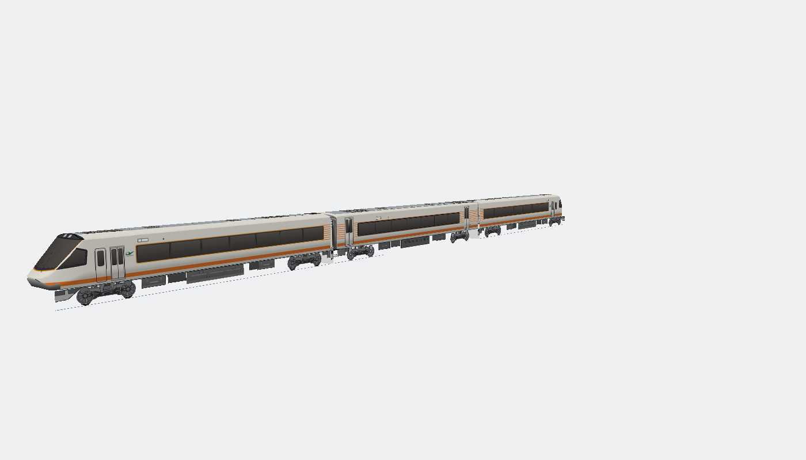
3. 万葉線デ7070形 manyosen-7070
车轮重做：改用图纸真 N-110B 转向架（原版只有 4 只孤悬圆盘）。提交 0c88329c。映射：万葉線。
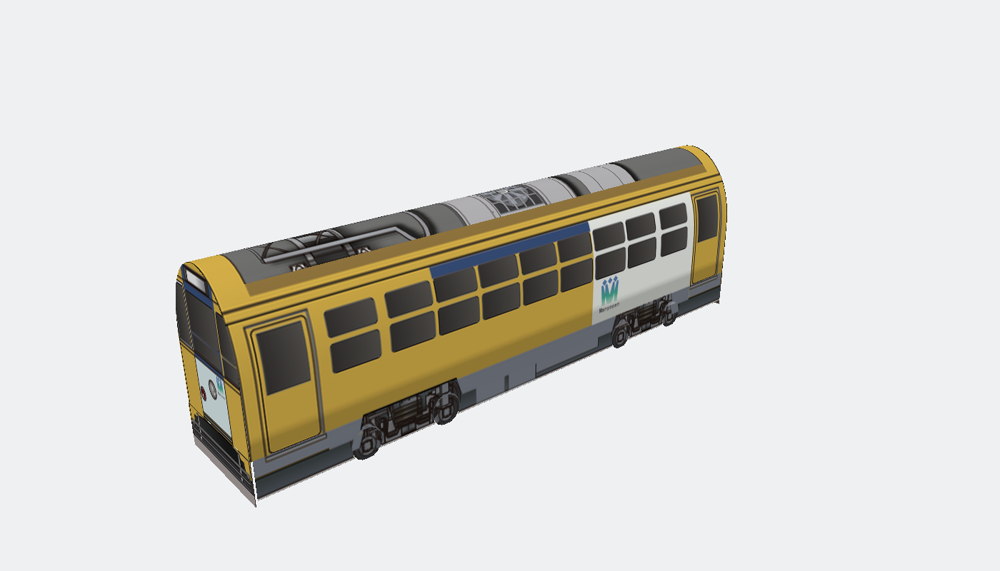

4. 由利高原鉄道YR3000形 yurikogen-yr3000
司机面翻正：两块端面件 rot 均判反，逐块取反。提交 ea009881。映射：鳥海山ろく線。
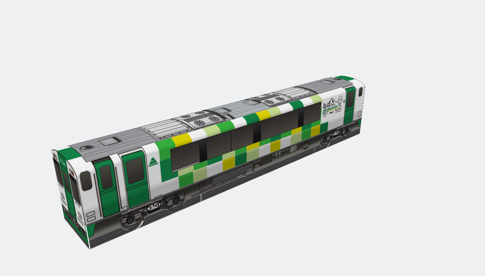
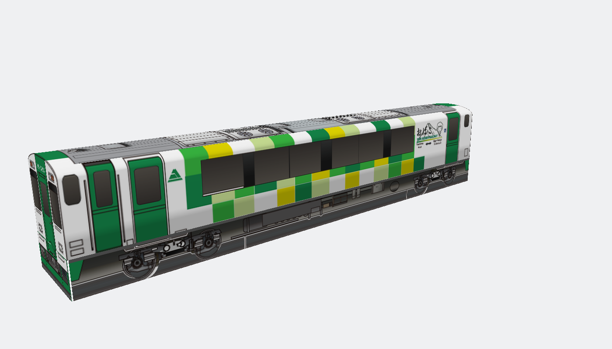
5. 札幌市電1100形「シリウス」 sapporosiden-1100
两端楔形重建 + 车轮重做（轴距改实车 1.60 m）+ 色带对齐到 1.28 m。提交 a703fef9。映射：札幌市電。

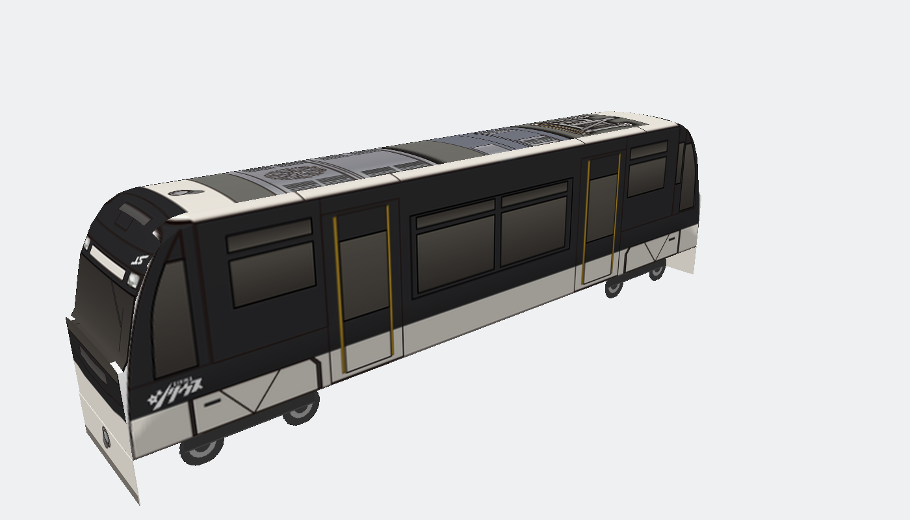
6. 山形鉄道YR-880形「こぶし」 yamagata-yr880
司机端翻正：两端端面件 rot 均判反。提交 fce23637。映射：フラワー長井線。

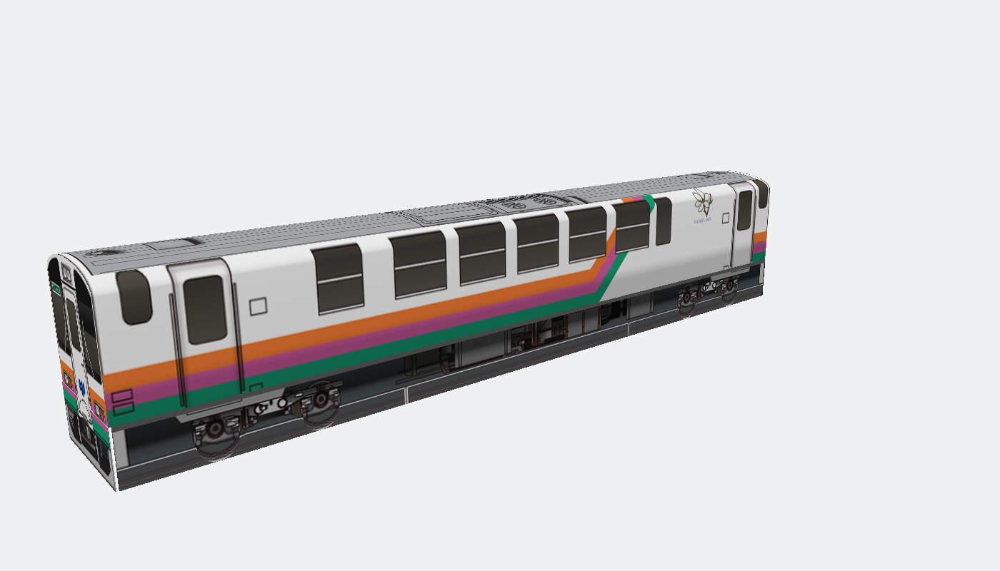
7. 銚子電気鉄道3000形「澪つくし号」 tyousi-3000
转向架周围清干净 + 司机面端面贴图消白缝（白色粘贴翼）。提交 8e64b074。映射：銚子電気鉄道線。
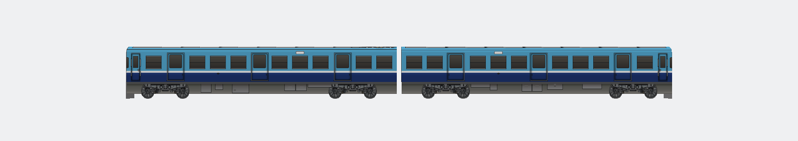
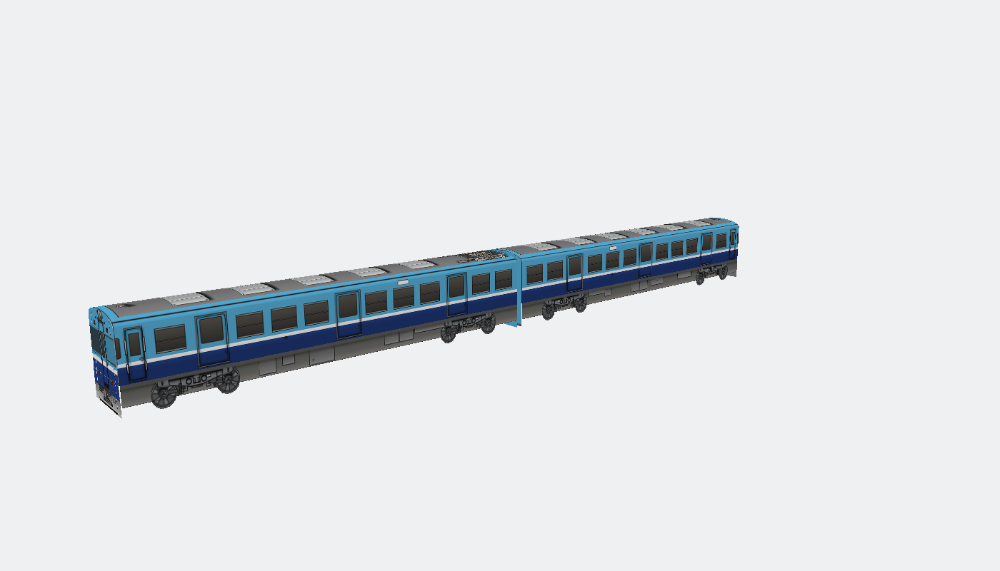
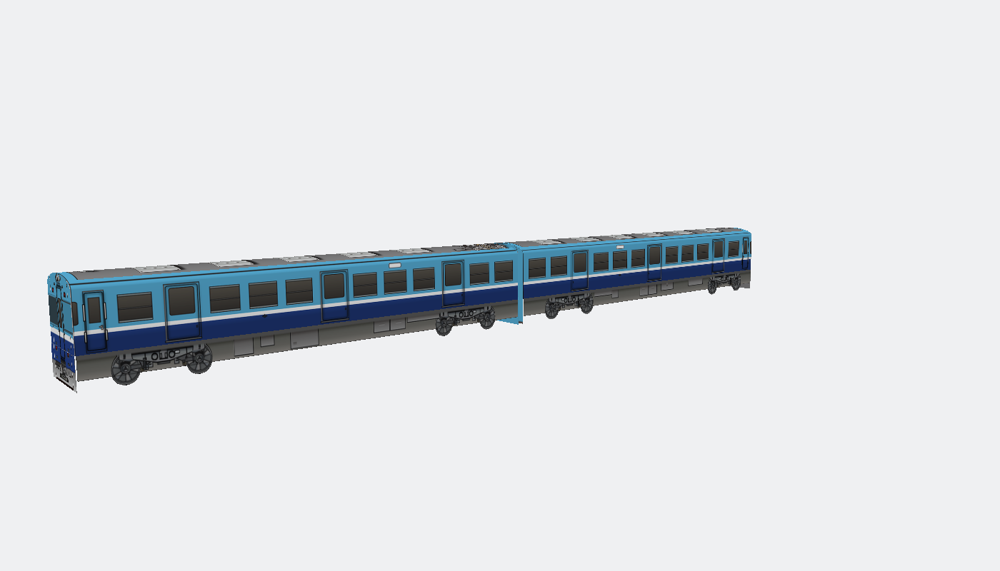
第二部分：补映射 2 辆
1. JR西日本キハ187系0番台「スーパーおき」 jr-west-kiha187
补映射：山口線（新挂本车；本车原为山陰本線第二模型、未映射）。模型本身未动，图为现行 GLB 渲染。


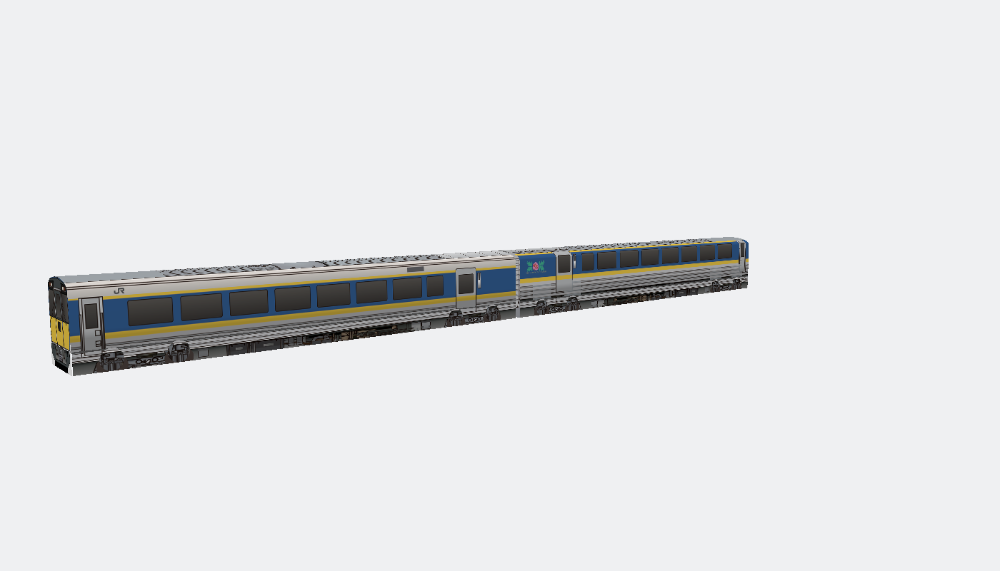
2. 南海10000系「サザン」 nankai-10000
补映射：和歌山港線（新挂本车；本车原为南海本線第二模型、未映射）。模型本身未动，图为现行 GLB 渲染。

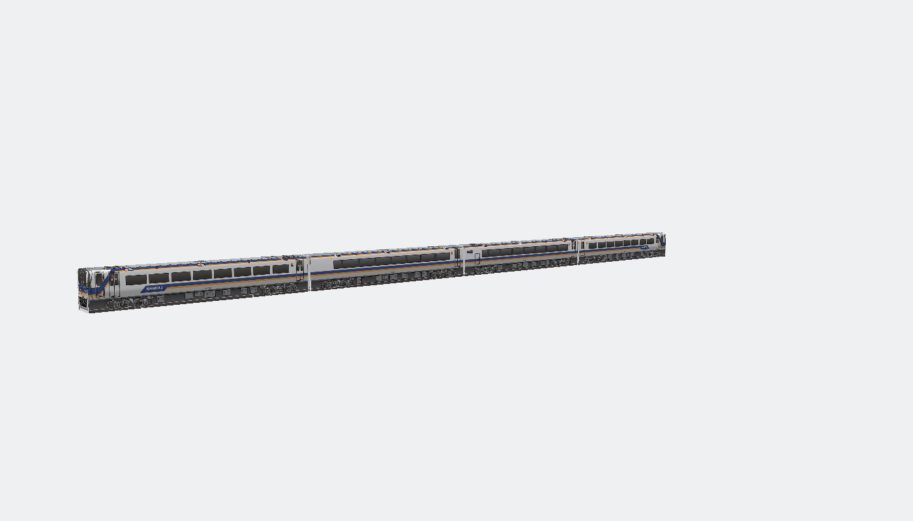
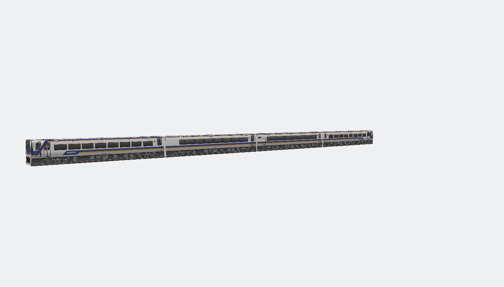